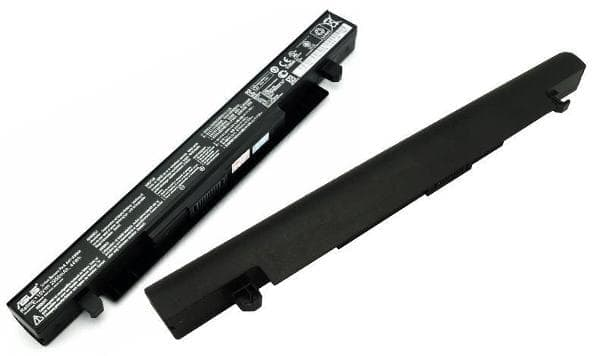

LAPTOP TERBAIK UNTUK PROGRAMMING
Assalamuaikum Wr.wb . Hallo kawan-kawan semua apa kabar, Semoga kawan-kawan seklian dalam lindungan Allah Swt Amin ya robbal alamin.
Assalamuaikum Wr.wb . Hallo kawan-kawan semua apa kabar, Semoga kawan-kawan seklian dalam lindungan Allah Swt Amin ya robbal alamin.
Kembali Lagi bersama saya Adly Ansari Nasution, kali ini Saya Akan sedikit Men-share materi tentang Laptop Terbaik Untuk Programming.
Sebelum kita masuk ke materinya saya sedikit memberi masukkan kalau betepa pentingnya memilih laptop yang terbaik untuk melakukan programming, karena dengan menggunakan laptop yang terbaik kita menjadi semangat alias kita jadi tidak merasa was-was akan terjadi seseuatu yang tidak kita ingin kan. Misalnya loadingnya lama, memori penuh, atau mungkin speck laptop kita tidak memadai, dan masih banyak lagi. Nah dari pada berlana-lama lagi , kawan-kawan simak yak penjelasan ini.. Hal-hal Terpenting pertama yang harus kawan-kawan perhatikan
Tips dari saya : Jika Kawan-kawan Ingin Menjadi Seorang Mobile App Developer saya sarankan Kawan-kawan Memebeli laptop dengan Ram 16GB.
Nah untuk yang kedua saat kawan-kawan memilih laptop untuk Pemrograman adalah Processor
Untuk yang ketiga ini adalah Mengintegrasikan Graphic Card perlu, jika kawan-kawan ingin menjadi Game Development atau pekerjaan lain yang berhubungan dengan grafis tinggi.
yang ke empat adalah Storage kawan-kawan. SSD dan HDD adalah dua jenis penyimpanan yang dimiliki laptop. SSD memberikan kinerja yang lebih cepat tetapi lebih mahal Dari HDD.
ini bagus jika kawan-kawan mampu membeli laptop dengan tipe penyimpanan SSD. Tetapi Jika kawan-kawan belum mampu untuk membeli yang SSD, kawan-kawan bisa menggunakan atau membeli HDD dulu dan di lain waktu atau kawan-kawan sudah mampu membelinya barulah kawan-kawan menggunakan SSD eksternal.
Nah yang terakhir adalah Baterai kawan-kawan. Jika kawan-kawan kebanyakan bekerja diluar ruangan dimana tidak adanya tersedia colokan carger maka kawan-kawan harus memilih laptop dengan daya tahan baterai yang lebih besar. hampir semua laptop zaman sekarang di lengkapi dengan cadangan baterai yang lebih besar.
oke kawan-kawan sekalian itulah sedikit penjelasan materi hari ini yang saya share ke kawan-kawan sekalian, Mudah-mudahan bermanfaat untuk kawan-kawan sekalian ya,
saya ucapkan terima kasih sudah mengunjungi blog saya, jika kawan-kawan ingin berikan pendapat atau komentar silahkan tulis saja di kolom komntar di bawah ini, yang pastinya yang positif ya kawan-kawan, Saya akhiri dengan Wasasalamualaikum Wr.Wb.
Info lebih lanjut:
Hubungi Saya
1.RAM
2.PROCESSOR
3.GRAPHIC CARD
4.STORAGE
5.BATERAI
